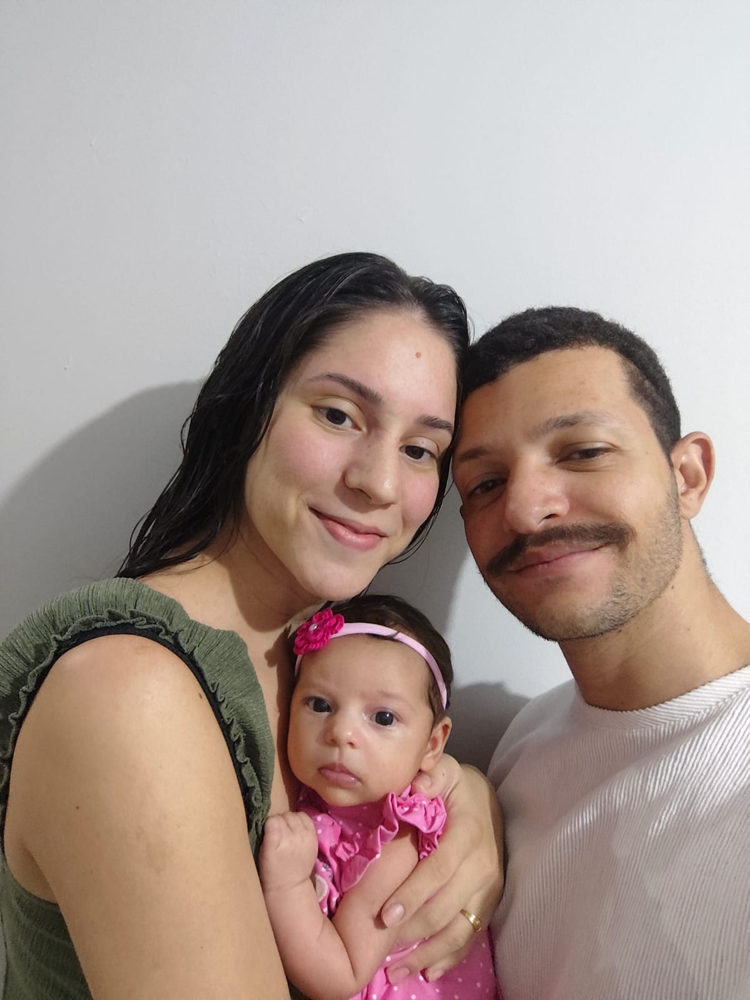
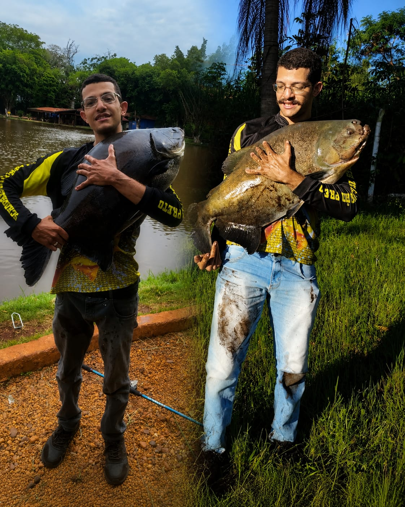
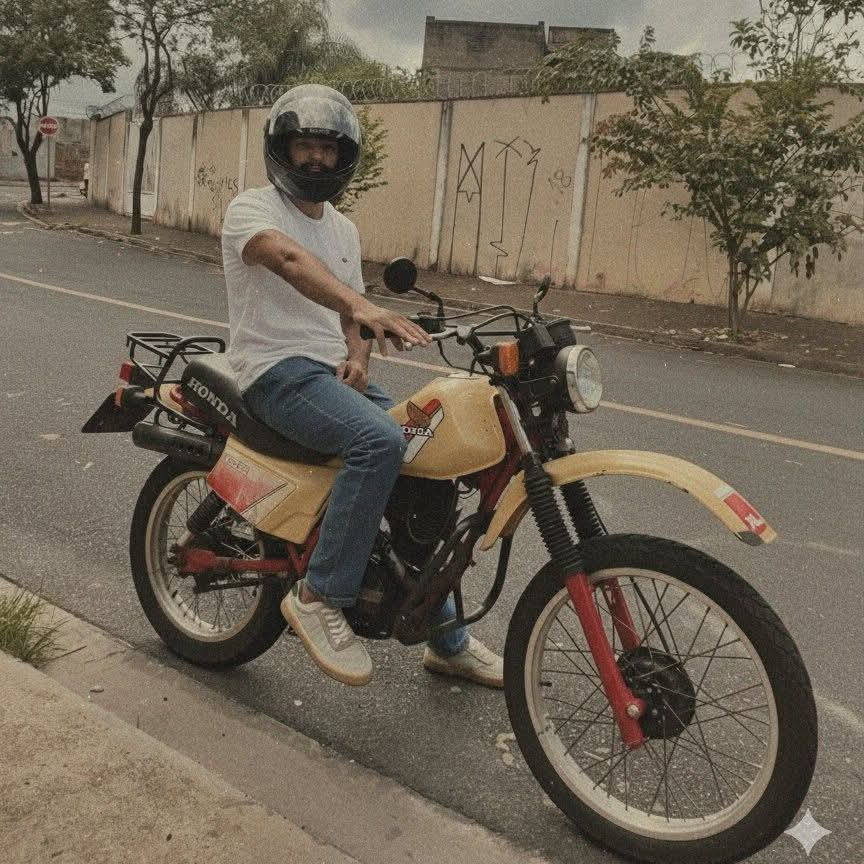
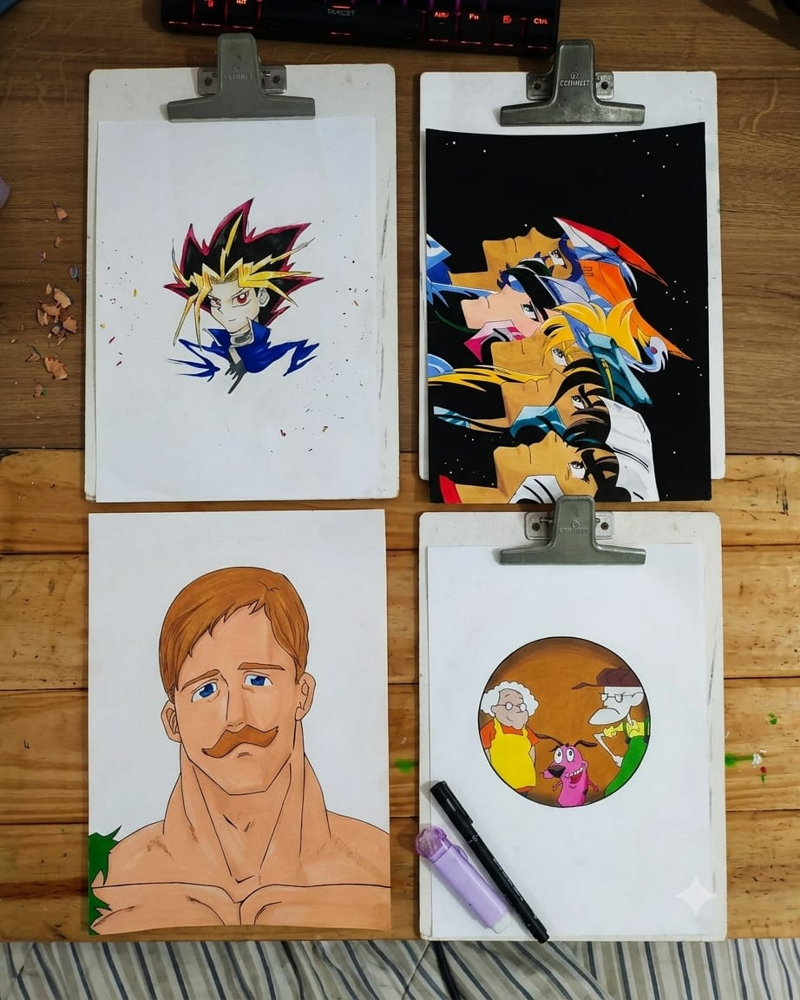
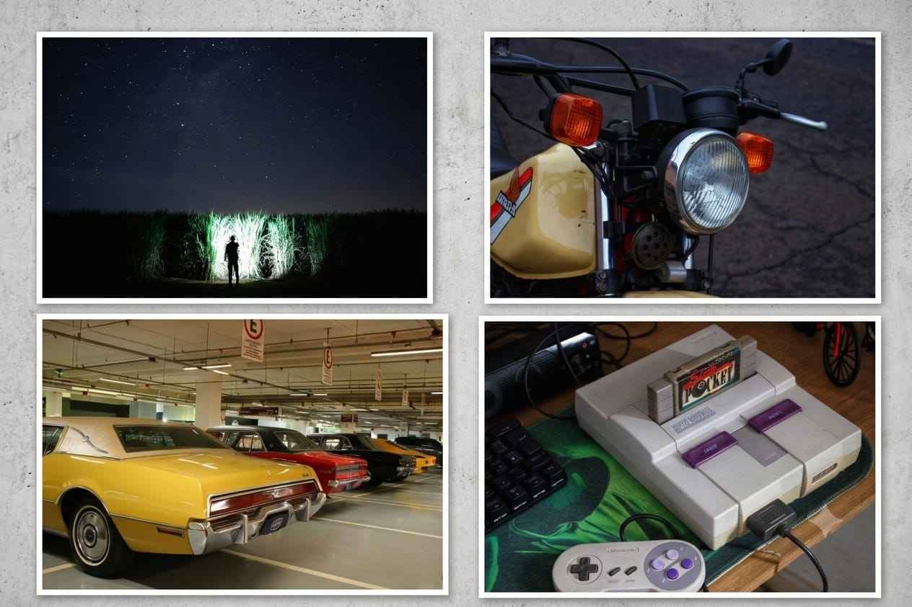

Quando fecho o notebook, é aqui que eu recarrego as energias.

Antes de qualquer título profissional, sou marido e pai. É ao lado da minha família que encontro meu maior propósito, minha motivação e a energia para seguir evoluindo — dentro e fora do código.

Uma vara na mão, o silêncio da água e a paciência de esperar. A pesca é onde desacelero, organizo as ideias e recarrego as energias.

Sou apaixonado por motos, recentemente comprei essa XL 125 1985 para restaurar. Mecânica, elétrica, manutenção e pequenos reparos despertam em mim a mesma curiosidade que levo para a tecnologia: entender o problema e encontrar uma solução.

Papel, lápis e um tempo longe das telas. Desenhar é meu espaço de criatividade e concentração — um contraste com o mundo digital que também ajuda a enxergar as coisas por novas perspectivas.

Gosto de registrar momentos, paisagens e detalhes pelo caminho. Para mim, fotografar é uma forma de guardar histórias e perceber aquilo que muitas vezes passa despercebido.